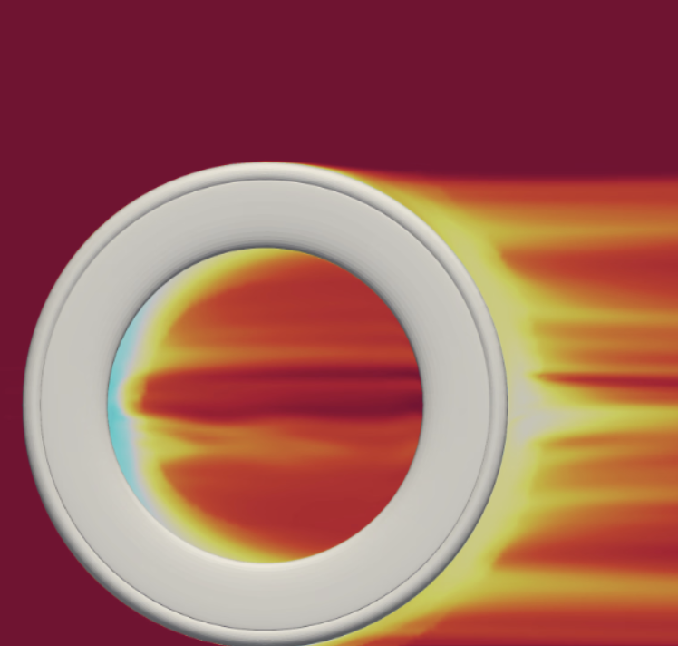
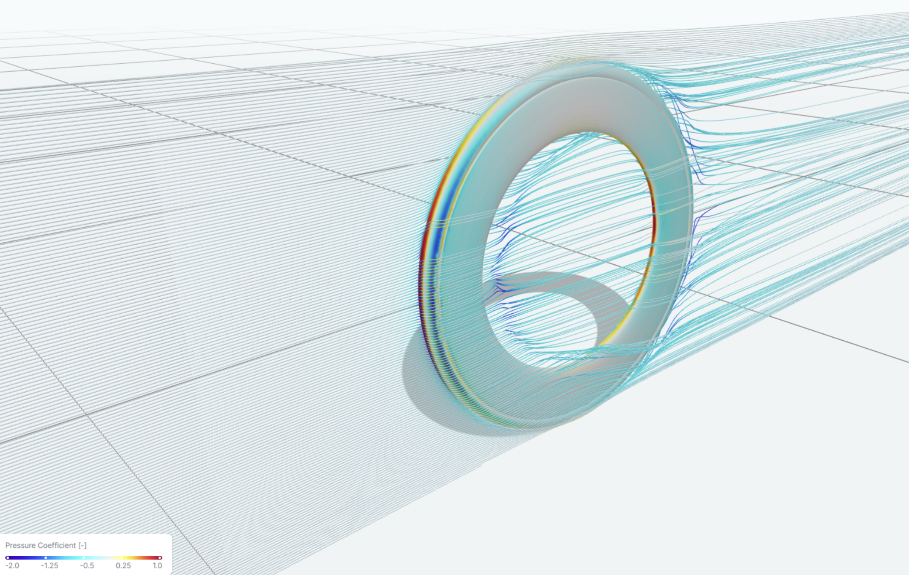

Improve the aerodynamic performance of an existing 95 mm carbon wheel as part of R&D for the wheelset used by sponsored athletes at the Ironman World Championships in Kona, Hawaii. A parametric CAD model was developed in SolidWorks to systematically modify the rim profile, with the existing 95 mm wheel geometry used as a baseline for comparison. Each iteration was evaluated using CFD to determine how changes in rim geometry affected drag across different yaw conditions.
Initial rim profiles were developed using elliptical geometry and NACA airfoil principles to guide the overall shape and location of maximum width. The profile near the tire was also designed to more closely match the tire curvature, creating a smoother transition between the tire and rim. These initial concepts provided a starting point for later parametric optimization.
The rim profile was controlled through parameters defining maximum width, maximum-width position, shoulder length, and inner-profile length. These parameters were varied systematically to determine which features had the greatest influence on aerodynamic performance. This study showed that shoulder length and maximum-width position were particularly influential, with shorter shoulders and a maximum-width position near 40% of the rim depth producing the strongest results.
Each design iteration was evaluated using CFD from 0–10° yaw to capture aerodynamic performance across realistic crosswind conditions. Yaw-angle weightings derived from conditions on the Kona course were applied to calculate a weighted-average drag for each geometry. This allowed designs to be compared based on expected race conditions rather than performance at a single yaw angle.

The optimized geometry reduced drag across the full tested yaw range compared with the baseline 95 mm wheel, with the largest improvements occurring at higher yaw angles. Weighted-average drag decreased from approximately 0.625 N to 0.401 N, representing a 35.9% reduction from the baseline geometry.
The parametric study also showed that optimizing at 0° yaw alone did not necessarily produce the strongest overall design. Shoulder length and maximum-width position became increasingly influential at higher yaw angles, demonstrating the importance of optimizing wheel geometry across the range of conditions expected during racing.